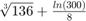
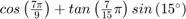
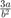
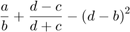
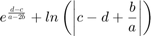
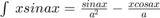
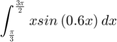

Problem Set 1
Ian Doarn / Problem Set 1 / 8-31-2017 /
Contents
Problem 1
a) 
b) 
disp("a) " + (sqrt(41^2-5.2^2))/(exp(5)-100.53)); disp("b) " + (nthroot(3, 136) + (log(300)/8)));
a) 0.84934 b) 1.7211
Problem 2
a) 
b) ![$sin^2\left(80^{\circ }\right)-\frac{\left(cos14^{\circ }sin80^{\circ }\right)^2}{\sqrt[3]{0.18}}$](IanDoarn_EECE2207_ProblemSet1_eq02825724843273447135.png)
Problem 3
a = 12, b = 15, c = , d = 
a) 
b) 
Problem 4
Given 
Calculate the following indefinite integral
